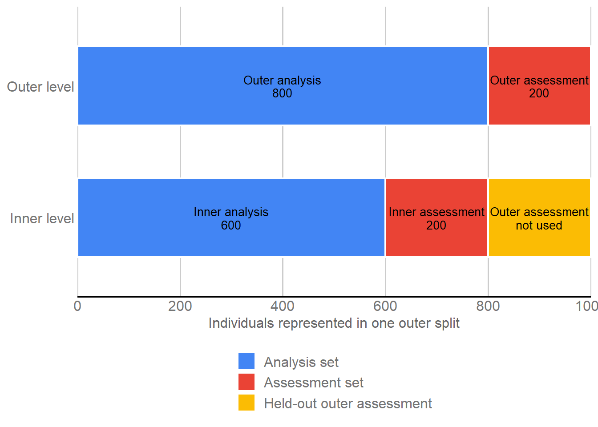

Last updated: 2026-11-20
Checks: 7 0
Knit directory:
Genomic-Prediction-using-Regularized-Artificial-Neural-Networks/
This reproducible R Markdown analysis was created with workflowr (version 1.7.2). The Checks tab describes the reproducibility checks that were applied when the results were created. The Past versions tab lists the development history.
Great! Since the R Markdown file has been committed to the Git repository, you know the exact version of the code that produced these results.
Great job! The global environment was empty. Objects defined in the global environment can affect the analysis in your R Markdown file in unknown ways. For reproduciblity it’s best to always run the code in an empty environment.
The command set.seed(20260821) was run prior to running
the code in the R Markdown file. Setting a seed ensures that any results
that rely on randomness, e.g. subsampling or permutations, are
reproducible.
Great job! Recording the operating system, R version, and package versions is critical for reproducibility.
Nice! There were no cached chunks for this analysis, so you can be confident that you successfully produced the results during this run.
Great job! Using relative paths to the files within your workflowr project makes it easier to run your code on other machines.
Great! You are using Git for version control. Tracking code development and connecting the code version to the results is critical for reproducibility.
The results in this page were generated with repository version 1130649. See the Past versions tab to see a history of the changes made to the R Markdown and HTML files.
Note that you need to be careful to ensure that all relevant files for
the analysis have been committed to Git prior to generating the results
(you can use wflow_publish or
wflow_git_commit). workflowr only checks the R Markdown
file, but you know if there are other scripts or data files that it
depends on. Below is the status of the Git repository when the results
were generated:
Ignored files:
Ignored: .Rhistory
Ignored: .Rproj.user/
Ignored: .github/
Ignored: CONTRIBUTING.md
Ignored: data/dados_reais/geno_real.rds
Ignored: output/real/ann/figures/
Ignored: output/real/audit/figures/
Ignored: output/real/comparison/figures/
Ignored: output/real/gblup/figures/
Ignored: output/real/phenotype/figures/
Ignored: output/simulated/gblup/figures/
Ignored: output/simulated/m01/
Ignored: output/simulated/m02/
Ignored: output/simulated/m03/
Ignored: output/simulated/m04/
Ignored: output/simulated/m05/
Ignored: renv/library/
Ignored: renv/staging/
Note that any generated files, e.g. HTML, png, CSS, etc., are not included in this status report because it is ok for generated content to have uncommitted changes.
These are the previous versions of the repository in which changes were
made to the R Markdown
(analysis/simulated_data_validation.Rmd) and HTML
(docs/simulated_data_validation.html) files. If you’ve
configured a remote Git repository (see ?wflow_git_remote),
click on the hyperlinks in the table below to view the files as they
were in that past version.
| File | Version | Author | Date | Message |
|---|---|---|---|---|
| Rmd | 1130649 | WevertonGomesCosta | 2026-11-19 | docs(simulated): finalize M02 validation tutorial |
| Rmd | cc46f63 | Weverton Gomes da Costa | 2026-11-19 | style(simulated): compact M02 R expressions without changing scientific tokens |
| Rmd | 1b09dcc | Weverton Gomes da Costa | 2026-11-19 | docs(simulated): organize M02 nested validation and isolate exports |
| html | dc338a9 | WevertonGomesCosta | 2026-11-16 | docs(m02): publish rebuilt pre-validation HTML |
| Rmd | 15bd434 | WevertonGomesCosta | 2026-11-16 | fix(m02): correct overlap table placeholder rendering |
| Rmd | def1a74 | WevertonGomesCosta | 2026-11-16 | docs(m02): clarify nested validation design and interpretation |
| Rmd | 687b805 | GitHub | 2026-11-16 | refactor(docs): simplify simulated M01 and M02 tutorials (#22) |
| html | 687b805 | GitHub | 2026-11-16 | refactor(docs): simplify simulated M01 and M02 tutorials (#22) |
| Rmd | 15bfb23 | GitHub | 2026-11-16 | docs: standardize scientific documentation and terminology (#19) |
| html | 15bfb23 | GitHub | 2026-11-16 | docs: standardize scientific documentation and terminology (#19) |
| html | c836215 | GitHub | 2026-11-16 | docs(site): publish real-data tutorial and synchronized comparisons (#18) |
| html | e9f3f1d | WevertonGomesCosta | 2026-09-08 | Refresh workflowr provenance after M01-M05 merge |
| html | 8439513 | WevertonGomesCosta | 2026-09-04 | Publish final M02 reader outputs |
| Rmd | 6a37221 | github-actions[bot] | 2026-09-04 | Refine M02 validation wording |
| Rmd | 837a085 | Weverton Gomes da Costa | 2026-09-04 | Refine M02 nested validation reader flow |
| html | c8124ab | WevertonGomesCosta | 2026-09-02 | Refresh integrated M01-M05 reproducibility metadata |
| html | 63c1f3f | WevertonGomesCosta | 2026-09-01 | Rebuild M02 after editorial revision |
| Rmd | c644314 | Weverton Gomes da Costa | 2026-09-01 | Refine M02 validation design tutorial |
| html | 217e778 | WevertonGomesCosta | 2026-09-01 | Complete reader-first didactic cleanup |
| Rmd | dea5684 | github-actions[bot] | 2026-08-31 | Simplify tutorials while preserving audit contracts |
| html | 7a3fbcd | WevertonGomesCosta | 2026-08-31 | Refresh tutorial site after final build |
| Rmd | f229ff3 | WevertonGomesCosta | 2026-08-31 | Refactor data audit and validation as tutorials |
| html | f229ff3 | WevertonGomesCosta | 2026-08-31 | Refactor data audit and validation as tutorials |
| html | f228245 | WevertonGomesCosta | 2026-08-31 | Publish reader-focused simulated workflow |
| Rmd | ae243c3 | WevertonGomesCosta | 2026-08-29 | Refine validation design for readers |
| html | fa907f6 | WevertonGomesCosta | 2026-08-28 | Publish audited workflowr documentation |
| Rmd | 0b8a4f6 | WevertonGomesCosta | 2026-08-28 | Revise canonical workflow documentation and scientific narrative |
| html | 0b8a4f6 | WevertonGomesCosta | 2026-08-28 | Revise canonical workflow documentation and scientific narrative |
| html | f7779fd | WevertonGomesCosta | 2026-08-27 | Build site. |
| html | 3caadce | WevertonGomesCosta | 2026-08-27 | Build site. |
| Rmd | 0ec25da | WevertonGomesCosta | 2026-08-27 | refactor: organize canonical outputs and local runtime artifacts |
| html | e48bb57 | WevertonGomesCosta | 2026-08-27 | Build site. |
| Rmd | f9c736e | WevertonGomesCosta | 2026-08-27 | refactor: establish canonical simulated genomic prediction workflow |
| html | f9c736e | WevertonGomesCosta | 2026-08-27 | refactor: establish canonical simulated genomic prediction workflow |
This module establishes common outer cross-validation partitions for GBLUP-A, GBLUP-AD, GBLUP-ADE, and all ANN variants. Nested inner cross-validation is used for ANN hyperparameter selection. The partitions are created before model fitting so every method is evaluated using the same outer assessment individuals.
Cross-validation follows four specifications:
Two terms are used throughout the module:
The distinction is especially important in nested validation. The outer assessment individuals remain untouched until final prediction, whereas the inner assessment individuals are used only to compare ANN candidates inside the corresponding outer analysis set.
Three R packages are used:
knitr formats the validation settings,
partition sizes, and cross-validation summaries as tables.ggplot2 constructs the diagram that
shows how the 1,000 individuals are separated at the outer and inner
validation levels.ggthemes applies the same Google Docs
theme and color scale adopted in the preceding module so the project
keeps a consistent visual style.library(knitr) # Format validation summaries as readable HTML tables.
library(ggplot2) # Draw the nested cross-validation structure.
library(ggthemes) # Apply the Google Docs theme and matching color scale.The complete partitioning procedure is controlled by four values. They are set once here and then reused for every scenario and prediction method:
SEED_GLOBAL <- 20260821L
N_OUTER_REPEATS <- 5L
N_OUTER_FOLDS <- 5L
N_INNER_FOLDS <- 4L
validation_parameters <- data.frame(
Parameter = c(
"Global seed",
"Outer repetitions",
"Outer folds per repetition",
"Inner folds per outer split"
),
Value = c(SEED_GLOBAL, N_OUTER_REPEATS, N_OUTER_FOLDS, N_INNER_FOLDS),
Role = c(
"reproducible partition generation",
"repeat held-out evaluation",
"define outer assessment sets",
"compare ANN candidates inside outer analysis"
)
)
validation_parameters |>
knitr::kable(
format = "html",
caption = "Fixed nested cross-validation settings",
row.names = FALSE,
table.attr = 'class="table table-striped table-hover table-bordered"'
)| Parameter | Value | Role |
|---|---|---|
| Global seed | 20260821 | reproducible partition generation |
| Outer repetitions | 5 | repeat held-out evaluation |
| Outer folds per repetition | 5 | define outer assessment sets |
| Inner folds per outer split | 4 | compare ANN candidates inside outer analysis |
The global seed is combined with repetition and fold identifiers later in the module. This produces distinct but exactly reproducible assignments without using any response or model information.
The shared simulated-data object created in M01 contains aligned phenotype, true genetic value, and genotype matrices. The partitions are generated from its individual row identifiers without using phenotype or true genetic values to determine fold membership.
The next chunk therefore does three things:
output/;# Read the shared simulated-data object prepared in M01.
simulated_common <- readRDS("output/simulated/audit/preprocessed_simulated_common.rds")
input_components <- data.frame(
Component = c("phenotype", "true_genetic_value", "genotype_m101"),
Rows = c(
nrow(simulated_common$phenotype),
nrow(simulated_common$true_genetic_value),
nrow(simulated_common$genotype_m101)
),
Columns = c(
ncol(simulated_common$phenotype),
ncol(simulated_common$true_genetic_value),
ncol(simulated_common$genotype_m101)
)
)
input_components |>
knitr::kable(
format = "html",
caption = "Aligned objects available before partition generation",
row.names = FALSE,
table.attr = 'class="table table-striped table-hover table-bordered"'
)| Component | Rows | Columns |
|---|---|---|
| phenotype | 1000 | 6 |
| true_genetic_value | 1000 | 6 |
| genotype_m101 | 1000 | 4010 |
The dimensions above confirm the three aligned matrices. Partition membership is now generated solely from the row identifiers stored in the M01 object.
# Use only the stored row identifiers to generate the folds.
ids <- as.integer(simulated_common$metadata$row_identifier)
individual_universe <- data.frame(
Quantity = c("Individuals used to generate folds", "First row identifier", "Last row identifier"),
Observed = c(length(ids), min(ids), max(ids))
)
individual_universe |>
knitr::kable(
format = "html",
caption = "Individual universe used for partition generation",
row.names = FALSE,
table.attr = 'class="table table-striped table-hover table-bordered"'
)| Quantity | Observed |
|---|---|
| Individuals used to generate folds | 1000 |
| First row identifier | 1 |
| Last row identifier | 1000 |
The displayed objects establish the partitioning universe:
The outer level provides the final held-out evaluation. In each repetition, the 1,000 row identifiers are shuffled reproducibly and assigned cyclically to five fold labels. Because 1,000 is divisible by five, every fold contains exactly 200 individuals.
For a given fold:
The code below repeats the same direct assignment procedure five times. The seed changes with the repetition number, which gives each repetition a distinct assignment while preserving exact reproducibility.
outer_assignment_list <- vector("list", N_OUTER_REPEATS)The outer-assignment list is initialized once. The next block shuffles the same 1,000 identifiers independently for each repetition and assigns them to five balanced folds.
# Build one balanced five-fold assignment for each repetition.
for (rep_id in seq_len(N_OUTER_REPEATS)) {
set.seed(SEED_GLOBAL + rep_id)
shuffled_ids <- sample(ids, size = length(ids), replace = FALSE)
assigned_folds <- rep(seq_len(N_OUTER_FOLDS), length.out = length(ids))
assignment <- data.frame(ID = shuffled_ids, Fold = assigned_folds, stringsAsFactors = FALSE)
# Sort only the displayed/stored rows; fold membership is already fixed.
assignment <- assignment[order(assignment$ID),, drop = FALSE]
rownames(assignment) <- NULL
outer_assignment_list[[rep_id]] <- data.frame(
Repetition = rep_id,
ID = assignment$ID,
OuterFold = assignment$Fold,
stringsAsFactors = FALSE
)
}
outer_assignments <- do.call(rbind, outer_assignment_list)
rownames(outer_assignments) <- NULL
outer_assignments$SplitID <- sprintf("R%02d_F%02d", outer_assignments$Repetition, outer_assignments$OuterFold)The outer fold assignments have been constructed and labeled. Their assessment and analysis sizes are summarized separately to verify the intended 200/800 allocation.
# Count the assessment and analysis individuals in every outer split.
outer_sizes <- aggregate(ID ~ Repetition + OuterFold + SplitID, data = outer_assignments, FUN = length)
names(outer_sizes)[names(outer_sizes) == "ID"] <- "Assessment_N"
outer_sizes$Analysis_N <- length(ids) - outer_sizes$Assessment_N
outer_sizes |>
knitr::kable(
format = "html",
caption = "Sizes of the 25 outer validation splits",
row.names = FALSE,
table.attr = 'class="table table-striped table-hover table-bordered"'
)| Repetition | OuterFold | SplitID | Assessment_N | Analysis_N |
|---|---|---|---|---|
| 1 | 1 | R01_F01 | 200 | 800 |
| 1 | 2 | R01_F02 | 200 | 800 |
| 1 | 3 | R01_F03 | 200 | 800 |
| 1 | 4 | R01_F04 | 200 | 800 |
| 1 | 5 | R01_F05 | 200 | 800 |
| 2 | 1 | R02_F01 | 200 | 800 |
| 2 | 2 | R02_F02 | 200 | 800 |
| 2 | 3 | R02_F03 | 200 | 800 |
| 2 | 4 | R02_F04 | 200 | 800 |
| 2 | 5 | R02_F05 | 200 | 800 |
| 3 | 1 | R03_F01 | 200 | 800 |
| 3 | 2 | R03_F02 | 200 | 800 |
| 3 | 3 | R03_F03 | 200 | 800 |
| 3 | 4 | R03_F04 | 200 | 800 |
| 3 | 5 | R03_F05 | 200 | 800 |
| 4 | 1 | R04_F01 | 200 | 800 |
| 4 | 2 | R04_F02 | 200 | 800 |
| 4 | 3 | R04_F03 | 200 | 800 |
| 4 | 4 | R04_F04 | 200 | 800 |
| 4 | 5 | R04_F05 | 200 | 800 |
| 5 | 1 | R05_F01 | 200 | 800 |
| 5 | 2 | R05_F02 | 200 | 800 |
| 5 | 3 | R05_F03 | 200 | 800 |
| 5 | 4 | R05_F04 | 200 | 800 |
| 5 | 5 | R05_F05 | 200 | 800 |
The outer table should be read as follows:
The fold assignment table identifies membership, but the modeling
modules need explicit ID vectors. The next chunk converts every
SplitID into a list with its 800 analysis IDs and 200
assessment IDs.
The first split illustrates the analysis and assessment sample sizes and their absence of overlap.
outer_split_ids <- sort(unique(outer_assignments$SplitID))
outer_splits <- setNames(vector("list", length(outer_split_ids)), outer_split_ids)The 25 split identifiers are now available. Each one will be represented by two explicitly disjoint ID vectors, ready for reuse by GBLUP and ANN.
# Store the two ID sets consumed later by GBLUP-ADE and ANN.
for (split_id in outer_split_ids) {
assessment_ids <- outer_assignments$ID[outer_assignments$SplitID == split_id]
analysis_ids <- setdiff(ids, assessment_ids)
outer_splits[[split_id]] <- list(
split_id = split_id,
analysis_ids = sort(analysis_ids),
assessment_ids = sort(assessment_ids)
)
}The split-list objects are constructed. The first split illustrates the exact stored structure without changing which individuals belong to any fold.
example_outer_split <- outer_splits[[1]]
outer_object_summary <- data.frame(
Component = c("analysis_ids", "assessment_ids", "overlap"),
N = c(
length(example_outer_split$analysis_ids),
length(example_outer_split$assessment_ids),
length(intersect(example_outer_split$analysis_ids, example_outer_split$assessment_ids))
),
First_IDs = c(
paste(head(example_outer_split$analysis_ids, 6), collapse = ", "),
paste(head(example_outer_split$assessment_ids, 6), collapse = ", "),
"Not applicable"
)
)
outer_object_summary |>
knitr::kable(
format = "html",
caption = paste("Structure of outer split", example_outer_split$split_id),
row.names = FALSE,
table.attr = 'class="table table-striped table-hover table-bordered"'
)| Component | N | First_IDs |
|---|---|---|
| analysis_ids | 800 | 1, 2, 3, 4, 5, 6 |
| assessment_ids | 200 | 13, 16, 23, 25, 27, 28 |
| overlap | 0 | Not applicable |
The example makes the outer separation explicit: the 800 analysis IDs and 200 assessment IDs do not overlap, and the same list structure is stored for all 25 outer splits.
The inner level is created inside each outer analysis set. It is used for ANN hyperparameter selection and therefore cannot contain any of the 200 outer assessment individuals.
For each 800-individual outer analysis set:
The code repeats this procedure for all 25 outer splits, producing
100 inner splits in total. The outer assessment IDs never enter the
inner assignment operation because the starting vector is always
outer_split$analysis_ids.
inner_assignments_list <- vector("list", length(outer_splits))
names(inner_assignments_list) <- names(outer_splits)
inner_splits <- setNames(vector("list", length(outer_splits)), names(outer_splits))The nested data structures are initialized. The inner-fold loop
begins only with outer_split$analysis_ids, ensuring that
the 200 outer-assessment individuals cannot enter inner tuning.
# Generate four inner folds separately within each outer analysis set.
for (split_id in names(outer_splits)) {
outer_split <- outer_splits[[split_id]]
split_tokens <- strsplit(
sub("^R", "", split_id),
"_F"
)[[1]]
rep_id <- as.integer(split_tokens[1])
outer_fold <- as.integer(split_tokens[2])
inner_seed <- SEED_GLOBAL + 100000L + rep_id * 100L + outer_fold
set.seed(inner_seed)
shuffled_ids <- sample(outer_split$analysis_ids, size = length(outer_split$analysis_ids), replace = FALSE)
assigned_folds <- rep(seq_len(N_INNER_FOLDS), length.out = length(outer_split$analysis_ids))
assignment <- data.frame(ID = shuffled_ids, Fold = assigned_folds, stringsAsFactors = FALSE)
assignment <- assignment[order(assignment$ID),, drop = FALSE]
rownames(assignment) <- NULL
inner_assignments_list[[split_id]] <- data.frame(
SplitID = split_id,
Repetition = rep_id,
OuterFold = outer_fold,
ID = assignment$ID,
InnerFold = assignment$Fold,
stringsAsFactors = FALSE
)
current_inner_splits <- setNames(vector("list", N_INNER_FOLDS), paste0("I", seq_len(N_INNER_FOLDS)))
# Convert every inner fold into explicit analysis and assessment ID sets.
for (inner_fold in seq_len(N_INNER_FOLDS)) {
inner_assessment_ids <- assignment$ID[assignment$Fold == inner_fold]
inner_analysis_ids <- setdiff(outer_split$analysis_ids, inner_assessment_ids)
current_inner_splits[[paste0("I", inner_fold)]] <- list(
split_id = split_id,
inner_fold = inner_fold,
analysis_ids = sort(inner_analysis_ids),
assessment_ids = sort(inner_assessment_ids)
)
}
inner_splits[[split_id]] <- current_inner_splits
}All 100 inner analysis/assessment pairs have been generated. The next block combines their assignment records and derives the realized fold sizes.
inner_assignments <- do.call(rbind, inner_assignments_list)
rownames(inner_assignments) <- NULL
inner_sizes <- aggregate(
ID ~ SplitID + Repetition + OuterFold + InnerFold,
data = inner_assignments,
FUN = length
)
names(inner_sizes)[names(inner_sizes) == "ID"] <- "Assessment_N"
inner_sizes$Analysis_N <- 800L - inner_sizes$Assessment_NThe first 20 inner partitions illustrate the allocation of 600 analysis and 200 assessment individuals used in all 100 inner splits.
head(inner_sizes, 20) |>
knitr::kable(
format = "html",
caption = "First 20 of the 100 inner validation splits",
row.names = FALSE,
table.attr = 'class="table table-striped table-hover table-bordered"'
)| SplitID | Repetition | OuterFold | InnerFold | Assessment_N | Analysis_N |
|---|---|---|---|---|---|
| R01_F01 | 1 | 1 | 1 | 200 | 600 |
| R02_F01 | 2 | 1 | 1 | 200 | 600 |
| R03_F01 | 3 | 1 | 1 | 200 | 600 |
| R04_F01 | 4 | 1 | 1 | 200 | 600 |
| R05_F01 | 5 | 1 | 1 | 200 | 600 |
| R01_F02 | 1 | 2 | 1 | 200 | 600 |
| R02_F02 | 2 | 2 | 1 | 200 | 600 |
| R03_F02 | 3 | 2 | 1 | 200 | 600 |
| R04_F02 | 4 | 2 | 1 | 200 | 600 |
| R05_F02 | 5 | 2 | 1 | 200 | 600 |
| R01_F03 | 1 | 3 | 1 | 200 | 600 |
| R02_F03 | 2 | 3 | 1 | 200 | 600 |
| R03_F03 | 3 | 3 | 1 | 200 | 600 |
| R04_F03 | 4 | 3 | 1 | 200 | 600 |
| R05_F03 | 5 | 3 | 1 | 200 | 600 |
| R01_F04 | 1 | 4 | 1 | 200 | 600 |
| R02_F04 | 2 | 4 | 1 | 200 | 600 |
| R03_F04 | 3 | 4 | 1 | 200 | 600 |
| R04_F04 | 4 | 4 | 1 | 200 | 600 |
| R05_F04 | 5 | 4 | 1 | 200 | 600 |
The inner structure is constant across all outer splits:
The diagram below places the two levels on the same 1,000-individual scale. The blocks are schematic: their positions do not represent consecutive individual identifiers or actual fold membership. The diagram illustrates why the outer assessment set is excluded from ANN tuning:
validation_flow <- data.frame(
Level = c(2, 2, 1, 1, 1),
xmin = c(0, 800, 0, 600, 800),
xmax = c(800, 1000, 600, 800, 1000),
Role = c("Analysis set", "Assessment set", "Analysis set", "Assessment set", "Held-out outer assessment"),
Label = c(
"Outer analysis\n800",
"Outer assessment\n200",
"Inner analysis\n600",
"Inner assessment\n200",
"Outer assessment\nnot used"
),
stringsAsFactors = FALSE
)
p_validation <- ggplot(validation_flow) + geom_rect(
aes(xmin = xmin, xmax = xmax, ymin = Level - 0.30, ymax = Level + 0.30, fill = Role),
color = "white",
linewidth = 0.8
) + geom_text(
aes(x = (xmin + xmax) / 2, y = Level, label = Label),
size = 3.6,
lineheight = 0.9
) + scale_fill_gdocs() +
scale_x_continuous(breaks = seq(0, 1000, 200), limits = c(0, 1000), expand = c(0, 0)) +
scale_y_continuous(breaks = c(1, 2), labels = c("Inner level", "Outer level"), limits = c(0.5, 2.5)) +
labs(x = "Individuals represented in one outer split", y = NULL, fill = NULL) + theme_gdocs() + theme(
legend.position = "bottom"
)
print(p_validation)
Nested cross-validation structure for one outer split. Inner validation is restricted to the 800 outer-analysis individuals; the 200 outer-assessment individuals remain held out.
| Version | Author | Date |
|---|---|---|
| 8439513 | WevertonGomesCosta | 2026-09-04 |
The diagram represents one outer split, but the same hierarchy is repeated for all 25 outer splits. This common structure is what allows every prediction method to be compared under the same held-out evaluations.
The folds are deliberately generated from a minimal set of information. This prevents the partition structure from adapting to the response, the simulated truth, or the prediction method.
The table distinguishes what participates in fold generation from what remains outside it:
partition_information <- data.frame(
Information = c(
"Individual row identifier",
"Deterministic seed",
"Simulation scenario",
"Phenotype",
"True genetic value",
"Prediction model"
),
Partition_role = c("Used", "Used", "Not used", "Not used", "Not used", "Not used")
)
partition_information |>
knitr::kable(
format = "html",
caption = "Information used and excluded when generating validation partitions",
row.names = FALSE,
table.attr = 'class="table table-striped table-hover table-bordered"'
)| Information | Partition_role |
|---|---|
| Individual row identifier | Used |
| Deterministic seed | Used |
| Simulation scenario | Not used |
| Phenotype | Not used |
| True genetic value | Not used |
| Prediction model | Not used |
This separation has direct consequences for model comparison:
The complete structure can now be summarized without reference to any fitted model. These counts define the number and size of comparisons used later by both prediction methods.
design_summary <- data.frame(
Item = c(
"Individuals",
"Scenarios",
"Outer repetitions",
"Outer folds per repetition",
"Total outer splits",
"Outer analysis N",
"Outer assessment N",
"Inner folds per outer split",
"Total inner splits",
"Inner analysis N",
"Inner assessment N",
"Global seed"
),
Value = c(
length(ids),
simulated_common$metadata$n_scenarios,
N_OUTER_REPEATS,
N_OUTER_FOLDS,
N_OUTER_REPEATS * N_OUTER_FOLDS,
800,
200,
N_INNER_FOLDS,
N_OUTER_REPEATS * N_OUTER_FOLDS * N_INNER_FOLDS,
600,
200,
SEED_GLOBAL
)
)
design_summary |>
knitr::kable(
format = "html",
caption = "Nested cross-validation for simulated data",
row.names = FALSE,
table.attr = 'class="table table-striped table-hover table-bordered"'
)| Item | Value |
|---|---|
| Individuals | 1000 |
| Scenarios | 6 |
| Outer repetitions | 5 |
| Outer folds per repetition | 5 |
| Total outer splits | 25 |
| Outer analysis N | 800 |
| Outer assessment N | 200 |
| Inner folds per outer split | 4 |
| Total inner splits | 100 |
| Inner analysis N | 600 |
| Inner assessment N | 200 |
| Global seed | 20260821 |
The cross-validation procedure comprises:
Because individuals appear across repetitions, the 25 outer assessments are not statistically independent population samples. Later comparisons should preserve the matched split structure across prediction methods.
The next summary is calculated from the generated objects rather than from the settings above. It verifies that the stored partitions have the intended sizes and that analysis and assessment sets do not overlap.
# Measure overlap directly from every stored outer split.
outer_overlap_values <- integer(length(outer_splits))
for (i in seq_along(outer_splits)) {
outer_overlap_values[i] <- length(
intersect(outer_splits[[i]]$analysis_ids, outer_splits[[i]]$assessment_ids)
)
}
outer_overlap <- max(outer_overlap_values)The outer-split overlap has been measured. The same disjointness check now runs over all 100 inner splits, without using any prediction outcomes.
# Measure overlap directly from all 100 inner splits.
inner_overlap_values <- integer(length(outer_splits) * N_INNER_FOLDS)
position <- 1L
for (split_id in names(inner_splits)) {
for (inner_id in names(inner_splits[[split_id]])) {
current_split <- inner_splits[[split_id]][[inner_id]]
inner_overlap_values[position] <- length(
intersect(current_split$analysis_ids, current_split$assessment_ids)
)
position <- position + 1L
}
}
inner_overlap <- max(inner_overlap_values)Both overlap summaries are available. The final table reports the observed counts from the stored partition objects, independently of the design parameters.
validation_observed <- data.frame(
Quantity = c(
"Outer assignment rows",
"Outer splits",
"Outer analysis N",
"Outer assessment N",
"Maximum outer overlap",
"Inner assignment rows",
"Inner splits",
"Inner analysis N",
"Inner assessment N",
"Maximum inner overlap"
),
Observed = c(
nrow(outer_assignments),
length(outer_splits),
unique(outer_sizes$Analysis_N),
unique(outer_sizes$Assessment_N),
outer_overlap,
nrow(inner_assignments),
length(outer_splits) * N_INNER_FOLDS,
unique(inner_sizes$Analysis_N),
unique(inner_sizes$Assessment_N),
inner_overlap
)
)
validation_observed |>
knitr::kable(
format = "html",
caption = "Observed structure of the nested cross-validation partitions",
row.names = FALSE,
table.attr = 'class="table table-striped table-hover table-bordered"'
)| Quantity | Observed |
|---|---|
| Outer assignment rows | 5000 |
| Outer splits | 25 |
| Outer analysis N | 800 |
| Outer assessment N | 200 |
| Maximum outer overlap | 0 |
| Inner assignment rows | 20000 |
| Inner splits | 100 |
| Inner analysis N | 600 |
| Inner assessment N | 200 |
| Maximum inner overlap | 0 |
The resulting partitions have the following characteristics:
The cv_design object contains the partition definitions
used by subsequent GBLUP and ANN analyses:
metadata records the fixed seed, the six simulation
scenarios, fold counts, and analysis and assessment sample sizes;outer_assignments and outer_splits specify
the 25 shared outer evaluations, each with 800 analysis and 200
assessment individuals;inner_assignments and inner_splits specify
the 100 inner subdivisions, each with 600 analysis and 200 assessment
individuals.The inner partitions support ANN hyperparameter selection, while the outer assessment sets enable matched comparisons between GBLUP and ANN.
# Preserve the established object structure consumed by M03 and M04.
cv_design <- list(
metadata = list(
dataset = "simulated",
seed_global = SEED_GLOBAL,
n_individuals = length(ids),
n_scenarios = simulated_common$metadata$n_scenarios,
outer_repetitions = N_OUTER_REPEATS,
outer_folds = N_OUTER_FOLDS,
inner_folds = N_INNER_FOLDS,
outer_analysis_n = 800L,
outer_assessment_n = 200L,
inner_analysis_n = 600L,
inner_assessment_n = 200L,
scenario_independent = TRUE,
model_independent = TRUE,
phenotype_used_for_partitioning = FALSE,
true_genetic_value_used_for_partitioning = FALSE
),
outer_assignments = outer_assignments,
outer_splits = outer_splits,
inner_assignments = inner_assignments,
inner_splits = inner_splits
)